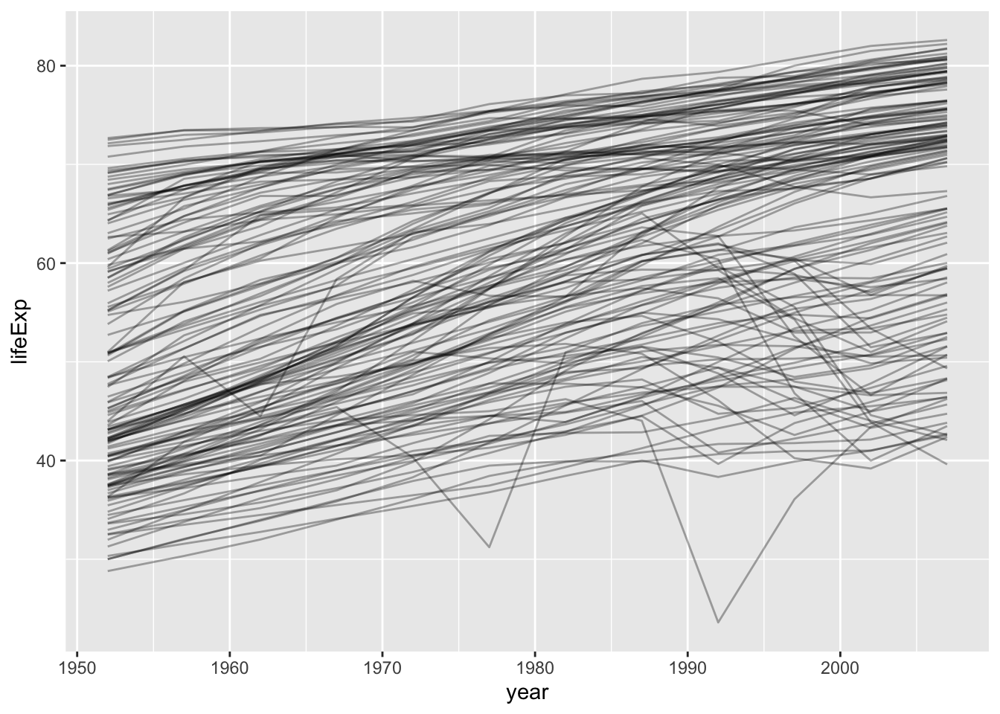
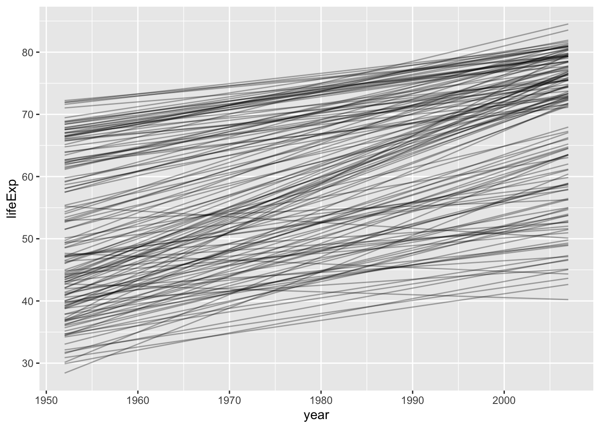

List columns
Data frames are a fantastic data structure for data analysis. We usually think of them as a data receptacle for several atomic vectors with a common length and with a notion of “observation”, i.e. the i-th value of each atomic vector is related to all the other i-th values.
But data frame are not limited to atomic vectors. They can host general vectors, i.e. lists as well. This is what I call a list-column.
List-columns and the data frame that hosts them require some special handling. In particular, it is highly advantageous if the data frame is a tibble, which anticipates list-columns. To work comfortably with list-columns, you need to develop techniques to:
- Inspect. What have I created?
- Index. How do I pull out specific bits by name or position?
- Compute. How do I operate on my list-column to make another vector or list-column?
- Simplify. How do I get rid of this list-column and back to a normal data frame?
The purrr package and all the techniques depicted in the other lessons come into heavy play here. This is a collection of worked examples that show these techniques applied specifically to list-columns.
Regex and Trump tweets
Load packages
library(tidyverse)
library(stringr)
library(lubridate)
library(here) ## install.packages("krlmlr/here")Bring tweets in
Working with the same 7 tweets as Trump Android words lesson. Go there for the rationale for choosing these 7 tweets.
tb_raw <- read_csv(here("talks", "trump-tweets.csv"))
#> Parsed with column specification:
#> cols(
#> tweet = col_character(),
#> source = col_character(),
#> created = col_datetime(format = "")
#> )Create a list-column of Trump Android words
Clean a variable and create a list-column:
sourcecomes in an unfriendly form. Simplify to convey if tweet came from Android or iPhone.twordsare what we’ll call the “Trump Android words”. See Trump Android words lesson for backstory. This is a list-column!
source_regex <- "android|iphone"
tword_regex <- "badly|crazy|weak|spent|strong|dumb|joke|guns|funny|dead"
tb <- tb_raw %>%
mutate(source = str_extract(source, source_regex),
twords = str_extract_all(tweet, tword_regex))Derive new variables
Add variables, two of which are based on the twords list-column.
n: How many twords are in the tweet?hour: At which hour of the day was the tweet?start: Start character of each tword.
tb <- tb %>%
mutate(n = lengths(twords),
hour = hour(created),
start = gregexpr(tword_regex, tweet))Use regular data manipulation toolkit
Let’s isolate tweets created before 2pm, containing 1 or 2 twords, in which there’s an tword that starts within the first 30 characters.
tb %>%
filter(hour < 14,
between(n, 1, 2),
between(map_int(start, min), 0, 30))
#> # A tibble: 1 x 7
#> tweet
#> <chr>
#> 1 Bernie Sanders started off strong, but with the selection of Kaine for V.P.
#> # ... with 6 more variables: source <chr>, created <dttm>, twords <list>,
#> # n <int>, hour <int>, start <list>Let’s isolate tweets that contain both the twords “strong” and “weak”.
tb %>%
filter(map_lgl(twords, ~ all(c("strong", "weak") %in% .x)))
#> # A tibble: 2 x 7
#> tweet
#> <chr>
#> 1 Bernie Sanders started off strong, but with the selection of Kaine for V.P.
#> 2 Crooked Hillary Clinton is unfit to serve as President of the U.S. Her temp
#> # ... with 6 more variables: source <chr>, created <dttm>, twords <list>,
#> # n <int>, hour <int>, start <list>JSON from an API and Game of Thrones
Load packages
library(repurrrsive)
library(tidyverse)
library(httr)
library(stringr)
library(here)Call the API of Ice and Fire
Here’s a simplified version of how we obtained the data on the Game of Thrones POV characters. This data appears as a more processed list in the repurrrsive package.
- Get character IDs from repurrrsive. cheating a little, humor me
- Put IDs and character names in a tibble.
pov <- set_names(map_int(got_chars, "id"),
map_chr(got_chars, "name"))
tail(pov, 5)
#> Melisandre Merrett Frey Quentyn Martell Samwell Tarly
#> 743 751 844 954
#> Sansa Stark
#> 957
ice <- pov %>%
enframe(value = "id")
ice
#> # A tibble: 30 x 2
#> name id
#> <chr> <int>
#> 1 Theon Greyjoy 1022
#> 2 Tyrion Lannister 1052
#> 3 Victarion Greyjoy 1074
#> 4 Will 1109
#> 5 Areo Hotah 1166
#> 6 Chett 1267
#> 7 Cressen 1295
#> 8 Arianne Martell 130
#> 9 Daenerys Targaryen 1303
#> 10 Davos Seaworth 1319
#> # ... with 20 more rowsRequest info for each character and store what comes back – whatever that may be – in the list-column stuff.
ice_and_fire_url <- "https://anapioficeandfire.com/"
if (file.exists(here("talks", "ice.rds"))) {
ice <- readRDS(here("talks", "ice.rds"))
} else {
ice <- ice %>%
mutate(
response = map(id,
~ GET(ice_and_fire_url,
path = c("api", "characters", .x))),
stuff = map(response, ~ content(.x, as = "parsed",
simplifyVector = TRUE))
) %>%
select(-id, -response)
saveRDS(ice, here("talks", "ice.rds"))
}
ice
#> # A tibble: 29 x 2
#> name stuff
#> <chr> <list>
#> 1 Theon Greyjoy <list [16]>
#> 2 Tyrion Lannister <list [16]>
#> 3 Victarion Greyjoy <list [16]>
#> 4 Will <list [16]>
#> 5 Areo Hotah <list [16]>
#> 6 Chett <list [16]>
#> 7 Cressen <list [16]>
#> 8 Arianne Martell <list [16]>
#> 9 Daenerys Targaryen <list [16]>
#> 10 Davos Seaworth <list [16]>
#> # ... with 19 more rowsLet’s switch to a nicer version of ice, based on the list in repurrrsive, because it already has books and houses replaced with names instead of URLs.
ice2 <- tibble(
name = map_chr(got_chars, "name"),
stuff = got_chars
)
ice2
#> # A tibble: 30 x 2
#> name stuff
#> <chr> <list>
#> 1 Theon Greyjoy <list [18]>
#> 2 Tyrion Lannister <list [18]>
#> 3 Victarion Greyjoy <list [18]>
#> 4 Will <list [18]>
#> 5 Areo Hotah <list [18]>
#> 6 Chett <list [18]>
#> 7 Cressen <list [18]>
#> 8 Arianne Martell <list [18]>
#> 9 Daenerys Targaryen <list [18]>
#> 10 Davos Seaworth <list [18]>
#> # ... with 20 more rowsInspect the list-column.
str(ice2$stuff[[9]], max.level = 1)
#> List of 18
#> $ url : chr "https://www.anapioficeandfire.com/api/characters/1303"
#> $ id : int 1303
#> $ name : chr "Daenerys Targaryen"
#> $ gender : chr "Female"
#> $ culture : chr "Valyrian"
#> $ born : chr "In 284 AC, at Dragonstone"
#> $ died : chr ""
#> $ alive : logi TRUE
#> $ titles : chr [1:5] "Queen of the Andals and the Rhoynar and the First Men, Lord of the Seven Kingdoms" "Khaleesi of the Great Grass Sea" "Breaker of Shackles/Chains" "Queen of Meereen" ...
#> $ aliases : chr [1:11] "Dany" "Daenerys Stormborn" "The Unburnt" "Mother of Dragons" ...
#> $ father : chr ""
#> $ mother : chr ""
#> $ spouse : chr "https://www.anapioficeandfire.com/api/characters/1346"
#> $ allegiances: chr "House Targaryen of King's Landing"
#> $ books : chr "A Feast for Crows"
#> $ povBooks : chr [1:4] "A Game of Thrones" "A Clash of Kings" "A Storm of Swords" "A Dance with Dragons"
#> $ tvSeries : chr [1:6] "Season 1" "Season 2" "Season 3" "Season 4" ...
#> $ playedBy : chr "Emilia Clarke"
# if (interactive()) {
# listviewer::jsonedit(ice2$stuff[[2]], mode = "view", width = 500, height = 530)
# }Use regular data manipulation toolkit
Form a sentence of the form “NAME was born AT THIS TIME, IN THIS PLACE” by digging info out of the stuff list-column and placing into a string template. No list-columns left!
template <- "${name} was born ${born}."
birth_announcements <- ice2 %>%
mutate(birth = map_chr(stuff, str_interp, string = template)) %>%
select(-stuff)
birth_announcements
#> # A tibble: 30 x 2
#> name
#> <chr>
#> 1 Theon Greyjoy
#> 2 Tyrion Lannister
#> 3 Victarion Greyjoy
#> 4 Will
#> 5 Areo Hotah
#> 6 Chett
#> 7 Cressen
#> 8 Arianne Martell
#> 9 Daenerys Targaryen
#> 10 Davos Seaworth
#> # ... with 20 more rows, and 1 more variables: birth <chr>Extract each character’s house allegiances. Keep only those with more than one allegiance. Then unnest to explode the houses list-column and get a tibble with one row per character * house combination. No list-columns left!
allegiances <- ice2 %>%
transmute(name,
houses = map(stuff, "allegiances")) %>%
filter(lengths(houses) > 1) %>%
unnest()
allegiances
#> # A tibble: 15 x 2
#> name houses
#> <chr> <chr>
#> 1 Davos Seaworth House Baratheon of Dragonstone
#> 2 Davos Seaworth House Seaworth of Cape Wrath
#> 3 Asha Greyjoy House Greyjoy of Pyke
#> 4 Asha Greyjoy House Ironmaker
#> 5 Barristan Selmy House Selmy of Harvest Hall
#> 6 Barristan Selmy House Targaryen of King's Landing
#> 7 Brienne of Tarth House Baratheon of Storm's End
#> 8 Brienne of Tarth House Stark of Winterfell
#> 9 Brienne of Tarth House Tarth of Evenfall Hall
#> 10 Catelyn Stark House Stark of Winterfell
#> 11 Catelyn Stark House Tully of Riverrun
#> 12 Jon Connington House Connington of Griffin's Roost
#> 13 Jon Connington House Targaryen of King's Landing
#> 14 Sansa Stark House Baelish of Harrenhal
#> 15 Sansa Stark House Stark of WinterfellAliases and allegiances of Game of Thrones characters
Load packages
library(tidyverse)
library(repurrrsive)
library(stringr)Lists as variables in a data frame
One row per GoT character. List columns for aliases and allegiances.
x <- tibble(
name = got_chars %>% map_chr("name"),
aliases = got_chars %>% map("aliases"),
allegiances = got_chars %>% map("allegiances")
)
x
#> # A tibble: 30 x 3
#> name aliases allegiances
#> <chr> <list> <list>
#> 1 Theon Greyjoy <chr [4]> <chr [1]>
#> 2 Tyrion Lannister <chr [11]> <chr [1]>
#> 3 Victarion Greyjoy <chr [1]> <chr [1]>
#> 4 Will <chr [1]> <NULL>
#> 5 Areo Hotah <chr [1]> <chr [1]>
#> 6 Chett <chr [1]> <NULL>
#> 7 Cressen <chr [1]> <NULL>
#> 8 Arianne Martell <chr [1]> <chr [1]>
#> 9 Daenerys Targaryen <chr [11]> <chr [1]>
#> 10 Davos Seaworth <chr [5]> <chr [2]>
#> # ... with 20 more rows
#View(x)What if we only care about characters with a “Lannister” alliance? Practice operating on a list-column.
x %>%
mutate(lannister = map(allegiances, str_detect, pattern = "Lannister"),
lannister = map_lgl(lannister, any))
#> # A tibble: 30 x 4
#> name aliases allegiances lannister
#> <chr> <list> <list> <lgl>
#> 1 Theon Greyjoy <chr [4]> <chr [1]> FALSE
#> 2 Tyrion Lannister <chr [11]> <chr [1]> TRUE
#> 3 Victarion Greyjoy <chr [1]> <chr [1]> FALSE
#> 4 Will <chr [1]> <NULL> FALSE
#> 5 Areo Hotah <chr [1]> <chr [1]> FALSE
#> 6 Chett <chr [1]> <NULL> FALSE
#> 7 Cressen <chr [1]> <NULL> FALSE
#> 8 Arianne Martell <chr [1]> <chr [1]> FALSE
#> 9 Daenerys Targaryen <chr [11]> <chr [1]> FALSE
#> 10 Davos Seaworth <chr [5]> <chr [2]> FALSE
#> # ... with 20 more rowsKeep only the Lannisters and Starks allegiances. You can use filter() with list-columns, but you will need to map() to list-ize your operation. Once I’ve got the characters I want, I drop allegiances and use unnest() to get back to a simple data frame with no list columns.
x %>%
filter(allegiances %>%
map(str_detect, "Lannister|Stark") %>%
map_lgl(any)) %>%
select(-allegiances) %>%
filter(lengths(aliases) > 0) %>%
unnest() %>%
print(n = Inf)
#> # A tibble: 57 x 2
#> name aliases
#> <chr> <chr>
#> 1 Tyrion Lannister The Imp
#> 2 Tyrion Lannister Halfman
#> 3 Tyrion Lannister The boyman
#> 4 Tyrion Lannister Giant of Lannister
#> 5 Tyrion Lannister Lord Tywin's Doom
#> 6 Tyrion Lannister Lord Tywin's Bane
#> 7 Tyrion Lannister Yollo
#> 8 Tyrion Lannister Hugor Hill
#> 9 Tyrion Lannister No-Nose
#> 10 Tyrion Lannister Freak
#> 11 Tyrion Lannister Dwarf
#> 12 Arya Stark Arya Horseface
#> 13 Arya Stark Arya Underfoot
#> 14 Arya Stark Arry
#> 15 Arya Stark Lumpyface
#> 16 Arya Stark Lumpyhead
#> 17 Arya Stark Stickboy
#> 18 Arya Stark Weasel
#> 19 Arya Stark Nymeria
#> 20 Arya Stark Squan
#> 21 Arya Stark Saltb
#> 22 Arya Stark Cat of the Canaly
#> 23 Arya Stark Bets
#> 24 Arya Stark The Blind Girh
#> 25 Arya Stark The Ugly Little Girl
#> 26 Arya Stark Mercedenl
#> 27 Arya Stark Mercye
#> 28 Brandon Stark Bran
#> 29 Brandon Stark Bran the Broken
#> 30 Brandon Stark The Winged Wolf
#> 31 Brienne of Tarth The Maid of Tarth
#> 32 Brienne of Tarth Brienne the Beauty
#> 33 Brienne of Tarth Brienne the Blue
#> 34 Catelyn Stark Catelyn Tully
#> 35 Catelyn Stark Lady Stoneheart
#> 36 Catelyn Stark The Silent Sistet
#> 37 Catelyn Stark Mother Mercilesr
#> 38 Catelyn Stark The Hangwomans
#> 39 Eddard Stark Ned
#> 40 Eddard Stark The Ned
#> 41 Eddard Stark The Quiet Wolf
#> 42 Jaime Lannister The Kingslayer
#> 43 Jaime Lannister The Lion of Lannister
#> 44 Jaime Lannister The Young Lion
#> 45 Jaime Lannister Cripple
#> 46 Jon Snow Lord Snow
#> 47 Jon Snow Ned Stark's Bastard
#> 48 Jon Snow The Snow of Winterfell
#> 49 Jon Snow The Crow-Come-Over
#> 50 Jon Snow The 998th Lord Commander of the Night's Watch
#> 51 Jon Snow The Bastard of Winterfell
#> 52 Jon Snow The Black Bastard of the Wall
#> 53 Jon Snow Lord Crow
#> 54 Kevan Lannister
#> 55 Sansa Stark Little bird
#> 56 Sansa Stark Alayne Stone
#> 57 Sansa Stark JonquilNested data frame, modelling, and Gapminder
Another version of this same example is here:
http://r4ds.had.co.nz/many-models.html
mostly code at this point, more words needed
Load packages
library(tidyverse)
library(gapminder)
library(broom)Hello, again, Gapminder
gapminder %>%
ggplot(aes(year, lifeExp, group = country)) +
geom_line(alpha = 1/3)
What if we fit a line to each country?
gapminder %>%
ggplot(aes(year, lifeExp, group = country)) +
geom_line(stat = "smooth", method = "lm",
alpha = 1/3, se = FALSE, colour = "black")
What if you actually want those fits? To access estimates, p-values, etc. In that case, you need to fit them yourself. How to do that?
- Put the variables needed for country-specific models into nested dataframe. In a list-column!
- Use the usual “map inside mutate”, possibly with the broom package, to pull interesting information out of the 142 fitted linear models.
Nested data frame
Nest the data frames, i.e. get one meta-row per country:
gap_nested <- gapminder %>%
group_by(country) %>%
nest()
gap_nested
#> # A tibble: 142 x 2
#> country data
#> <fctr> <list>
#> 1 Afghanistan <tibble [12 x 5]>
#> 2 Albania <tibble [12 x 5]>
#> 3 Algeria <tibble [12 x 5]>
#> 4 Angola <tibble [12 x 5]>
#> 5 Argentina <tibble [12 x 5]>
#> 6 Australia <tibble [12 x 5]>
#> 7 Austria <tibble [12 x 5]>
#> 8 Bahrain <tibble [12 x 5]>
#> 9 Bangladesh <tibble [12 x 5]>
#> 10 Belgium <tibble [12 x 5]>
#> # ... with 132 more rows
gap_nested$data[[1]]
#> # A tibble: 12 x 5
#> continent year lifeExp pop gdpPercap
#> <fctr> <int> <dbl> <int> <dbl>
#> 1 Asia 1952 28.801 8425333 779.4453
#> 2 Asia 1957 30.332 9240934 820.8530
#> 3 Asia 1962 31.997 10267083 853.1007
#> 4 Asia 1967 34.020 11537966 836.1971
#> 5 Asia 1972 36.088 13079460 739.9811
#> 6 Asia 1977 38.438 14880372 786.1134
#> 7 Asia 1982 39.854 12881816 978.0114
#> 8 Asia 1987 40.822 13867957 852.3959
#> 9 Asia 1992 41.674 16317921 649.3414
#> 10 Asia 1997 41.763 22227415 635.3414
#> 11 Asia 2002 42.129 25268405 726.7341
#> 12 Asia 2007 43.828 31889923 974.5803Compare/contrast to a data frame grouped by country (dplyr-style) or split on country (base).
Fit models, extract results
Fit a model for each country.
gap_fits <- gap_nested %>%
mutate(fit = map(data, ~ lm(lifeExp ~ year, data = .x)))Look at one fitted model, for concreteness.
gap_fits %>% tail(3)
#> # A tibble: 3 x 3
#> country data fit
#> <fctr> <list> <list>
#> 1 Yemen, Rep. <tibble [12 x 5]> <S3: lm>
#> 2 Zambia <tibble [12 x 5]> <S3: lm>
#> 3 Zimbabwe <tibble [12 x 5]> <S3: lm>
canada <- which(gap_fits$country == "Canada")
summary(gap_fits$fit[[canada]])
#>
#> Call:
#> lm(formula = lifeExp ~ year, data = .x)
#>
#> Residuals:
#> Min 1Q Median 3Q Max
#> -0.3812 -0.1368 -0.0471 0.2481 0.3157
#>
#> Coefficients:
#> Estimate Std. Error t value Pr(>|t|)
#> (Intercept) -3.583e+02 8.252e+00 -43.42 1.01e-12 ***
#> year 2.189e-01 4.169e-03 52.50 1.52e-13 ***
#> ---
#> Signif. codes: 0 '***' 0.001 '**' 0.01 '*' 0.05 '.' 0.1 ' ' 1
#>
#> Residual standard error: 0.2492 on 10 degrees of freedom
#> Multiple R-squared: 0.9964, Adjusted R-squared: 0.996
#> F-statistic: 2757 on 1 and 10 DF, p-value: 1.521e-13Let’s get all the r-squared values!
gap_fits %>%
mutate(rsq = map_dbl(fit, ~ summary(.x)[["r.squared"]])) %>%
arrange(rsq)
#> # A tibble: 142 x 4
#> country data fit rsq
#> <fctr> <list> <list> <dbl>
#> 1 Rwanda <tibble [12 x 5]> <S3: lm> 0.01715964
#> 2 Botswana <tibble [12 x 5]> <S3: lm> 0.03402340
#> 3 Zimbabwe <tibble [12 x 5]> <S3: lm> 0.05623196
#> 4 Zambia <tibble [12 x 5]> <S3: lm> 0.05983644
#> 5 Swaziland <tibble [12 x 5]> <S3: lm> 0.06821087
#> 6 Lesotho <tibble [12 x 5]> <S3: lm> 0.08485635
#> 7 Cote d'Ivoire <tibble [12 x 5]> <S3: lm> 0.28337240
#> 8 South Africa <tibble [12 x 5]> <S3: lm> 0.31246865
#> 9 Uganda <tibble [12 x 5]> <S3: lm> 0.34215382
#> 10 Congo, Dem. Rep. <tibble [12 x 5]> <S3: lm> 0.34820278
#> # ... with 132 more rowsLet’s use a function from broom to get the usual coefficient table from summary.lm() but in a friendlier form for downstream work.
library(broom)
gap_fits %>%
mutate(coef = map(fit, tidy)) %>%
unnest(coef)
#> # A tibble: 284 x 6
#> country term estimate std.error statistic
#> <fctr> <chr> <dbl> <dbl> <dbl>
#> 1 Afghanistan (Intercept) -507.5342716 40.484161954 -12.536613
#> 2 Afghanistan year 0.2753287 0.020450934 13.462890
#> 3 Albania (Intercept) -594.0725110 65.655359062 -9.048348
#> 4 Albania year 0.3346832 0.033166387 10.091036
#> 5 Algeria (Intercept) -1067.8590396 43.802200843 -24.379118
#> 6 Algeria year 0.5692797 0.022127070 25.727749
#> 7 Angola (Intercept) -376.5047531 46.583370599 -8.082385
#> 8 Angola year 0.2093399 0.023532003 8.895964
#> 9 Argentina (Intercept) -389.6063445 9.677729641 -40.258031
#> 10 Argentina year 0.2317084 0.004888791 47.395847
#> # ... with 274 more rows, and 1 more variables: p.value <dbl>